LightSense OLED 页面草图
SSD1309 1.54″ 128×64 单色屏 · 依据 src/oled.cpp 当前源码逐支复刻 · 4× 整数放大（512×256，最近邻）
页面清单
| 编号 | 页面 | 状态 | 源码位置 | 函数 |
|---|---|---|---|---|
| 01 | 频闪仪（页 0） | 合规 PASS（默认态） | src/oled.cpp:103-134 | drawMeterPage() |
| 02 | 频闪仪（页 0） | 双超标（判定文案与框宽变化） | src/oled.cpp:103-134 | drawMeterPage() |
| 03 | LED（页 1） | 当前输出=常灭，光标=常灭 | src/oled.cpp:138-164 | drawLedPage() |
| 04 | LED（页 1） | 光标=5 kHz，当前输出=1 kHz | src/oled.cpp:138-164 | drawLedPage() |
| 05 | 教室（页 2） | 第 1 步 · 巡检选中，有上次记录 | src/oled.cpp:224-259 | drawClassroomPage() |
| 06 | 教室（页 2） | 第 1 步 · 普通测量选中，无记录 | src/oled.cpp:224-259 | drawClassroomPage() |
| 07 | 教室（页 2） | 第 2 步 · 30s 选中 | src/oled.cpp:297-316 | drawClassroomPage() |
| 08 | 教室（页 2） | 第 2 步 · 1min 选中 | src/oled.cpp:297-316 | drawClassroomPage() |
| 09 | 教室（页 2） | 第 2 步 · 10min 选中 | src/oled.cpp:297-316 | drawClassroomPage() |
| 10 | 教室（页 2） | 第 3 步 · 巡检确认（Z002，30s） | src/oled.cpp:261-295 | drawClassroomPage() |
| 11 | 教室（页 2） | 第 3 步 · 普通测量确认（30s） | src/oled.cpp:261-295 | drawClassroomPage() |
| 12 | 教室（页 2） | 巡检进行中 · 空闲（Z001 2/5，下一点 RF 右前） | src/oled.cpp:196-214 | drawClassroomPage() → inspection idle 分支 |
| 13 | 教室（页 2） | 巡检 5 点已测完（Z001 5/5） | src/oled.cpp:196-214 | drawClassroomPage() → inspection idle 分支 |
| 14 | 教室（页 2） | 测量进行中（巡检 Z001-C，12/29，剩余 17s） | src/oled.cpp:172-193 | drawClassroomPage() → running 分支 |
| 15 | 教室（页 2） | 测量进行中（巡检 Z001-C，125/586，剩余 7:52） | src/oled.cpp:172-193 | drawClassroomPage() → running 分支 |
| 16 | 教室（页 2） | 普通测量进行中（灯具 1，9/29） | src/oled.cpp:172-193 | drawClassroomPage() → running 分支 |
| 17 | 全局临时提示条（覆盖任一页） | 记录已满提示（叠在第 2 步背景上） | src/oled.cpp:36-41, 331-336 | oledMsg() + drawAll() |
逐页草图
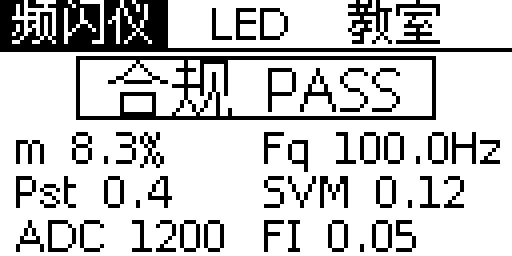
- 触发条件
- 上电默认 s_page=0；左右键循环切页。本页上下/OK 无动作（OK 仅触发一次重绘）
- 函数
drawMeterPage()- 源码
src/oled.cpp:103-134- 关键元素
- 三页签；16px 判定文本（ZONE_OLED[zone]）+ 按文本宽自适应的判定框；6 项指标两列
- 本图取值
- zone=0 → “合规 PASS”；示例快照 m 8.3% / Fq 100.0Hz / Pst 0.4 / SVM 0.12 / ADC 1200 / FI 0.05
- 备注
- 判定框宽 = 文本宽 + 16，上限 124；bx=(128-bw)/2，避免画满 128 列造成面板包绕（oled.cpp:110-116）
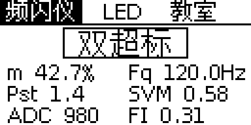
- 触发条件
- 同页 0，由 snap->zone=3 切换判定文案；无独立结果页
- 函数
drawMeterPage()- 源码
src/oled.cpp:103-134- 关键元素
- 16px “双超标” + 框宽 64（文本 48+16）；指标值随快照变化
- 本图取值
- zone=3 → “双超标”；m 42.7% / Fq 120.0Hz / Pst 1.4 / SVM 0.58 / ADC 980 / FI 0.31
- 备注
- 同一页面只换数据与判定文案，布局不变；Pst 按 %.1f 输出，1.35 显示为 1.4
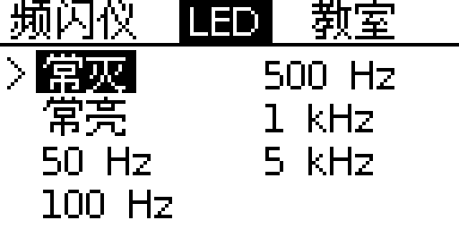
- 触发条件
- 页 0 右键 / 页 2 左键进入；进入后 s_ledSel 保留上次光标
- 函数
drawLedPage()- 源码
src/oled.cpp:138-164- 关键元素
- 7 模式两列网格（列优先：左列 0–3，右列 4–6）；反白=当前实际输出；> = 预选光标；上下键在 7 模式循环；OK 应用
- 本图取值
- ledPwmGetMode()=0 → “常灭”反白；s_ledSel=0 → “>”在常灭左侧（x=2）
- 备注
- 模式名来自 led_pwm.cpp MODES 表（L14-L21），与网页 /led 参数同源
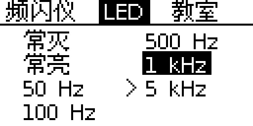
- 触发条件
- 上下键移动 s_ledSel，OK 前不改变输出；本例 s_ledSel=6、当前模式=5
- 函数
drawLedPage()- 源码
src/oled.cpp:138-164- 关键元素
- 反白块只跟随当前输出（1 kHz），> 光标独立停在 5 kHz
- 本图取值
- cur=5 → “1 kHz”反白；s_ledSel=6 → “>”在 5 kHz 左侧（x=64）
- 备注
- 确认后光标与反白重合；两列 x=12/74，行距 12，首行基线 y=25
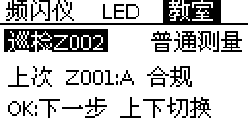
- 触发条件
- 左/右键进入页 2 时 s_clsStage=0；上下键切换 s_clsMode；OK → 第 2 步
- 函数
drawClassroomPage()- 源码
src/oled.cpp:224-259- 关键元素
- 模式项“巡检Z002”（巡检 + 下一个自动编号预览）与“普通测量”；“上次 Z001:A 合规”；底行操作提示
- 本图取值
- nextAutoNo=2 → Z002；已完成记录 Z001、verdict=1 → “A 合规”
- 备注
- “上次…”行经 fitUTF8(buf,124) 截尾；本例 96px 不触发
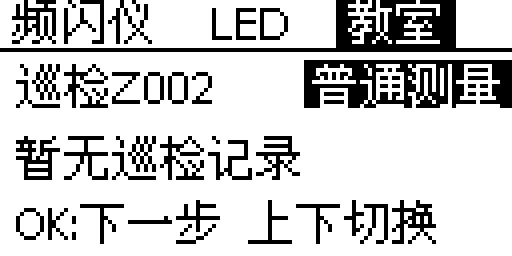
- 触发条件
- 第 1 步上下键切到 s_clsMode=1；无已完成巡检任务
- 函数
drawClassroomPage()- 源码
src/oled.cpp:224-259- 关键元素
- “普通测量”反白框 x76–127 贴右缘；“暂无巡检记录”
- 本图取值
- 无 status=DONE 的任务 → last=NULL；普通测量文本 48px，框宽 52
- 备注
- 右缘贴边是代码坐标结果（xm[1]=78），未做避让
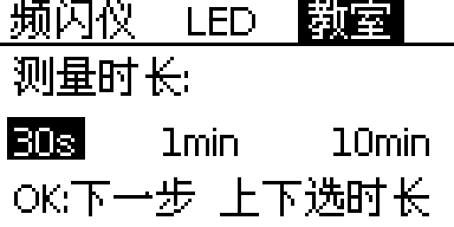
- 触发条件
- 第 1 步按 OK → s_clsStage=1；上下键循环三档；OK → 第 3 步
- 函数
drawClassroomPage()- 源码
src/oled.cpp:297-316- 关键元素
- “测量时长:” + 三档选项（30s/1min/10min），反白当前档；底行提示
- 本图取值
- s_durSel=0 → 30s 反白（x2–23）
- 备注
- 三档 x=4/46/94，框高 12、基线 44；底行提示会被临时消息条覆盖
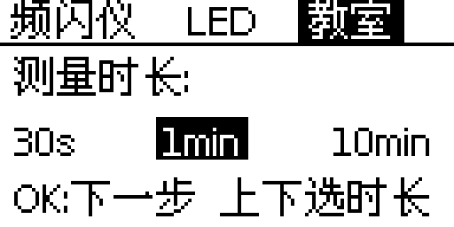
- 触发条件
- 上下键循环 s_durSel=1
- 函数
drawClassroomPage()- 源码
src/oled.cpp:297-316- 关键元素
- 1min 反白框 x44–71；另两档正常显示
- 本图取值
- DUR_NAMES[1]="1min"；窗口数 CLS_WINDOWS_1MIN
- 备注
- 三档窗口数见 DUR_WINDOWS（oled.cpp:44），与网页三档一致
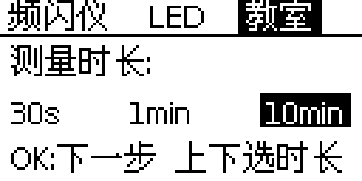
- 触发条件
- 上下键循环 s_durSel=2
- 函数
drawClassroomPage()- 源码
src/oled.cpp:297-316- 关键元素
- 10min 反白框 x92–125；右侧留 2px
- 本图取值
- DUR_NAMES[2]="10min"；窗口数 CLS_WINDOWS_10MIN
- 备注
- 框 + 文本总宽 34px，未越过 127 列
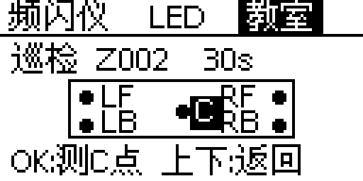
- 触发条件
- 第 2 步按 OK → s_clsStage=2；上下键返回第 2 步；OK 建立自动编号任务并从 C 点开测
- 函数
drawClassroomPage()- 源码
src/oled.cpp:261-295- 关键元素
- 标题“巡检 Z002 30s”；教室轮廓 80×21（x24–103,y28–48）；5 个测点圆点；LF/RF/LB/RB；中心 C 反白块 x67–78；底行“OK:测C点 上下:返回”
- 本图取值
- s_clsMode=0、nextAutoNo=2、s_durSel=0
- 备注
- C 反白块后画，覆盖 RF 首列；C 文本基线 43，圆点半径 2（drawDisc）
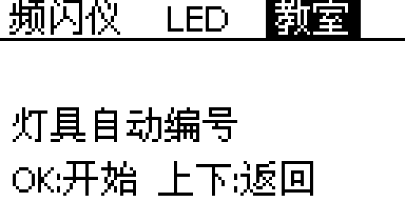
- 触发条件
- s_clsMode=1 时第 3 步；OK → classroomStart(NULL,…)，灯具自动编号
- 函数
drawClassroomPage()- 源码
src/oled.cpp:261-295- 关键元素
- 标题“普通测量 30s”；中部“灯具自动编号”；底行“OK:开始 上下:返回”
- 本图取值
- s_clsMode=1、s_durSel=0
- 备注
- 不显示教室点位图（仅巡检模式绘制）
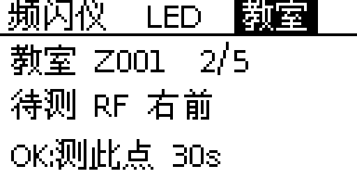
- 触发条件
- 巡检任务已建立且 classroomIsRunning()=false；上下键仍可改时长；OK 测下一点，5 点齐全则结束
- 函数
drawClassroomPage() → inspection idle 分支- 源码
src/oled.cpp:196-214- 关键元素
- “教室 Z001 2/5”；“待测 RF 右前”；“OK:测此点 30s”
- 本图取值
- pointsCount=2 → 下一点 RF（顺序 C→LF→RF→LB→RB）；s_durSel=0
- 备注
- 教室号过长时 fitUTF8 截尾，避免右缘包绕
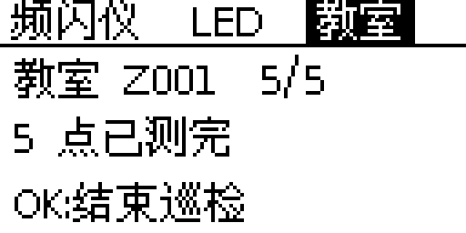
- 触发条件
- classroomInspectNextPoint()=0 且任务仍 active；OK → classroomInspectFinish()
- 函数
drawClassroomPage() → inspection idle 分支- 源码
src/oled.cpp:196-214- 关键元素
- “教室 Z001 5/5”；“5 点已测完”；“OK:结束巡检”
- 本图取值
- pointsCount=5、next=0
- 备注
- 结束后无独立结果页，回到第 1 步菜单；汇总结果在网页端查看
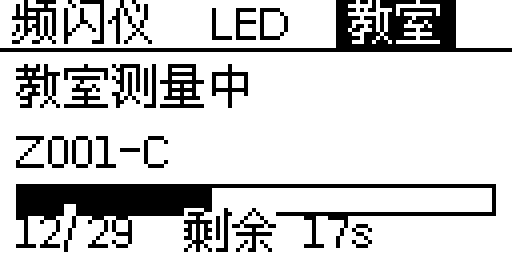
- 触发条件
- OK 启动后 classroomIsRunning()=true；运行中 OK 忽略，左右仍可切页看实时值
- 函数
drawClassroomPage() → running 分支- 源码
src/oled.cpp:172-193- 关键元素
- “教室测量中”；标签“Z001-C”；进度框 120×8（y46–53）；填充=done*120/target；“12/29 剩余 17s”
- 本图取值
- done=12、target=29（30s 档）；fill=49px；remS=(29-12)*1024/1000=17
- 备注
- 底行基线 62，CJK 字顶行落在 y52–53，与进度框底边重叠；按代码如实复现
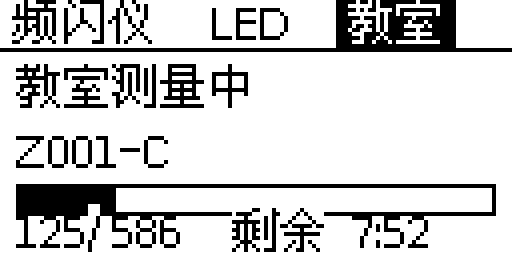
- 触发条件
- 10min 档启动后的运行态
- 函数
drawClassroomPage() → running 分支- 源码
src/oled.cpp:172-193- 关键元素
- 同一运行页；剩余 ≥60s 时格式化为 m:ss
- 本图取值
- done=125、target=586；fill=25px；remS=(586-125)*1024/1000=472 → 7:52
- 备注
- 底部文字 104px，未越过右缘
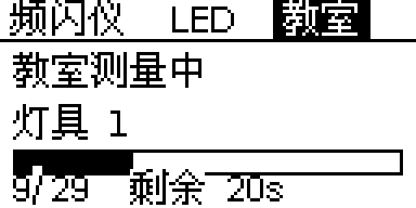
- 触发条件
- 第 3 步普通测量 OK → classroomStart(NULL,…)，标签自动命名“灯具 N”
- 函数
drawClassroomPage() → running 分支- 源码
src/oled.cpp:172-193- 关键元素
- “教室测量中”；标签“灯具 1”；进度 9/29；剩余 20s
- 本图取值
- classroomStart(NULL) → “灯具 1”；done=9、target=29
- 备注
- 普通测量没有独立页面，复用教室页运行态（oled.cpp:410）
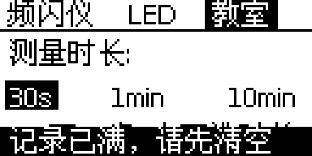
- 触发条件
- 创建巡检失败 → “任务/记录已满”（L408）；普通测量失败 → “记录已满, 请先清空”（L416）；显示 3 秒（L40）
- 函数
oledMsg() + drawAll()- 源码
src/oled.cpp:36-41, 331-336- 关键元素
- 反白条 0,52,128,12；文字基线 62，x=4；覆盖当前页底行
- 本图取值
- s_msg="记录已满, 请先清空"，宽 108px
- 备注
- 全页唯一底部反白提示条；不是低电量条（固件当前无电池模块）
合并图（3×2 六页对照）
用于并入专利交底书的单页视图：选取 01 / 03 / 05 / 07 / 10 / 14 六张草图，按 3 列 × 2 行、阅读序（左→右、上→下）拼接，每张图下方统一标注原编号。
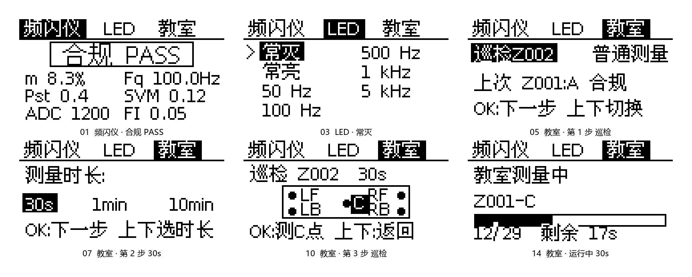
oled-merge-01-03-05-07-10-14.png · 1728×694 px · 单色 L · 白底 · 六张按 1:1 整数像素直接粘贴，未缩放、未重采样（网页内按容器宽度缩放显示，文件本身为原像素）。| 编号 | 页面 / 状态 | 源文件 | 落位左上角 (x, y) | 占位 |
|---|---|---|---|---|
| 01 | 频闪仪 · 合规 PASS | 01_meter_pass.png | (48, 48) | 512×256 |
| 03 | LED · 常灭 | 03_led_default.png | (608, 48) | 512×256 |
| 05 | 教室 · 第 1 步 巡检 | 05_classroom_step1_inspect.png | (1168, 48) | 512×256 |
| 07 | 教室 · 第 2 步 30s | 07_classroom_step2_30s.png | (48, 352) | 512×256 |
| 10 | 教室 · 第 3 步 巡检 | 10_classroom_step3_inspect.png | (608, 352) | 512×256 |
| 14 | 教室 · 运行中 30s | 14_classroom_running_30s.png | (1168, 352) | 512×256 |
开机 Logo 设计稿（3 版候选）
仅设计稿，未改动固件代码；128×64 逐像素绘制 + 4× 最近邻（512×256），字形取自固件同款 U8g2 字库。完整时序、Flash 与耗时说明见 boot-logo.md。
- 元素
- 顶部光点、圆环 r=10、环内频闪折线、左右光条；品牌
LightSense；品类版本FLICKER METER v1.7 - 字体
helvB14_tf（14px 比例） +6x13_tf（6×13 半等宽）- 坐标
- 环 (64,16)；品牌 x13 y44（宽 102）；副标 x10 y59（宽 108）；墨迹 x10–116 / y2–59
- Flash
- +5,842 B（≈5.7 KiB）；无堆分配
- 耗时
- CPU 0.1–0.3 ms，占全屏刷新（40–80 ms）约 0.5%
- 风险
- 6×13 副标偏细；需确认分区余量
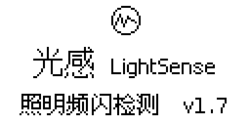
- 元素
- 小圆环 r=7 + 折线；中文主标
光感与英文LightSense同基线；副标照明频闪检测 · v1.7 - 字体
- 复用现有
wqy16_t_gb2312/wqy12_t_gb2312（GB2312 全集） - 坐标
- 环 (64,10)；主标 x17 y38（宽 32）+ 英文 x57 y38（宽 54）；副标 x10 y58（宽 107）
- Flash
- +0 B（两档字库本就已链接）；无堆分配
- 耗时
- 同 A 版量级
- 风险
- 12 px 中文偏小；信息密度最高
- 元素
- 顶部光点、大圆环 r=16、环内折线、左右光条；仅品牌
LightSense - 字体
logisoso16_tf（16px 几何无衬线）- 坐标
- 环 (64,19)；品牌 x18 y57（宽 92）；墨迹 x19–108 / y1–60
- Flash
- +3,048 B（≈3.0 KiB）；无堆分配
- 耗时
- CPU 0.1–0.3 ms（图元约 400 px）
- 风险
- 无品类/版本文字；环顶 y=1 贴近边缘
| 版本 | 画面元素 | 新增字体 | Flash 增量 | 结论 |
|---|---|---|---|---|
| A（推荐） | 图形 + 品牌 + 品类 + 版本 | helvB14_tf + 6x13_tf | 5,842 B | 信息最完整，成本可控，纯英数不依赖 CJK 字库 |
| B | 图形（小）+ 中英双标 + 副标 | 无 | 0 B | Flash 敏感时首选；中文 12px 偏小 |
| C | 图形（大）+ 品牌 | logisoso16_tf | 3,048 B | 适合放大图/宣传，屏上信息最少 |
教室巡检结果页 设计稿（3 版候选）
仅设计稿，未改动固件代码；128×64 逐像素绘制 + 4× 最近邻（512×256），字形取自固件同款 U8g2 字库。字段可得性、交互时序与落地成本见 inspect-result.md。
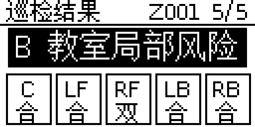
- 优先级
- 汇总结论 > 完成度 > 每点判定
- 元素
- 标题 + 教室号
Z001 5/5；结论反白条；C/LF/RF/LB/RB 五个 23×26 结果格（点位码 + 单字判定） - 字体
wqy12_t_gb2312+wqy16_t_gb2312- 坐标
- 结论条 (4,14,120×20) 文字基线 29；格子 x=3+25i，y=37；点位码基线 49、判定基线 61；右缘 126
- 成本
- +0 B 字体；代码约 250–500 B；堆 0
- 风险
- 单字判定需要一次图例说明（合/超/双/暗/亮）
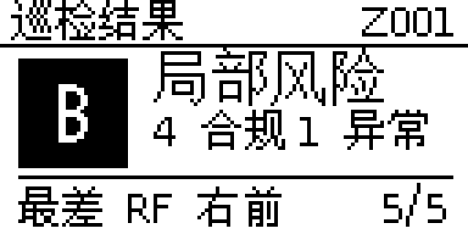
- 优先级
- 结论 > 统计 > 最差点
- 元素
- 30×30 反白徽章内 A/B/C 大字；
局部风险；4 合规 / 1 异常；最差 RF 右前+5/5 - 字体
logisoso16_tf（大字）+wqy16+wqy12- 坐标
- 徽章 (5,16,30×30)，字母基线 39；结论 x42 y27；计数 x42/x82 y40；底行 y61
- 成本
- logisoso16 若已随开机 logo 落地为 +0 B，否则 +3,048 B；堆 0
- 风险
- 看不到 5 点完整分布，只知最差点
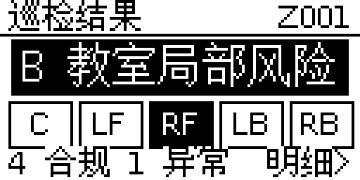
- 优先级
- 结论 > 点位分布 > 计数
- 元素
- 结论条；5 个 23×17 状态格（异常格反白）；
4 合规 1 异常+明细> - 字体
wqy12+wqy16- 坐标
- 结论条 (4,14,120×20)；格子 x=3+25i，y=36；底行基线 62
- 成本
- +0 B 字体；两屏合计代码约 400–700 B；状态 ~8 B RAM；堆 0
- 风险
- 需翻页交互与按键语义，改动面比 A/B 大
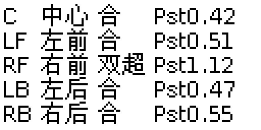
- 优先级
- 逐点判定与 Pst 值
- 元素
- 5 行：点位码 / 中文点名 / 判定（合·P超·S超·双超·暗·亮）/ Pst
- 字体
wqy12（12 px）- 坐标
- 列 x=2 / 20 / 48 / 76；行基线 12/24/36/48/60；最右墨迹 118
- 成本
- +0 B 字体；无新增存储；堆 0
- 风险
- 128 px 只够 1 个指标，SVM 留在网页端
| 版本 | 一屏可得信息 | 交互 | 字体 / Flash | 结论 |
|---|---|---|---|---|
| A（推荐） | 结论 + 完成度 + 5 点判定 | 无需翻页，任意键退出 | 0 B（wqy12/wqy16） | 信息最全、改动最小、与 1.024 s 重绘天然兼容 |
| B | 结论 + 合规/异常计数 + 最差点 | 无需翻页 | 0 或 +3,048 B（logisoso16） | 最易读，但缺失逐点分布 |
| C | 汇总屏 + 逐点 Pst 明细 | 上下键翻页 | 0 B | 适合后续扩展，交互与状态成本最高 |
代码中不存在的页面（未绘制）
- 开机 / 引导页：当前固件中不存在。
oledBegin()只做初始化与串口打印（oled.cpp:67-75），无 splash；首帧要等首个报告窗口（main.cpp:147-155）或按键重绘（oled.cpp:424）。开机 Logo 仅有设计稿（见上一节），未落地。 - 巡检结果页：不存在独立页面。第 1 步只显示“上次 room:verdict”预览（oled.cpp:246-256），5 点测完后只显示“5 点已测完 / OK:结束巡检”（L202-212）；完整结果在网页端。结果页仅有设计稿（见上一节 A/B/C 三版，未落地）。
- 普通测量结果页：不存在。实时指标在页 0（oled.cpp:118-133），结果汇总在网页端。
- 记录列表页：不存在。无列表、翻页或详情 UI。
- 设置 / WiFi 页：不存在。WiFi 通过网页端 /setup 配置，OLED 无设置入口。
- 低电量提示条 / 电池图标：当前源码无电池模块（v1.7 电池特性已回滚）；全页唯一的底部反白条是
oledMsg()临时提示（L36-41、L331-336）。